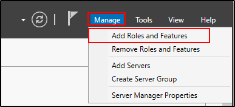

Setting up LDAPs
To "appreciate" more this attack, we need to add one more feature to the Server:
A certificate
In Windows Server:



Once done that, we need to configure the certificate:


We created a certificate to run LDAP on a secure side.
Now, reboot the server.